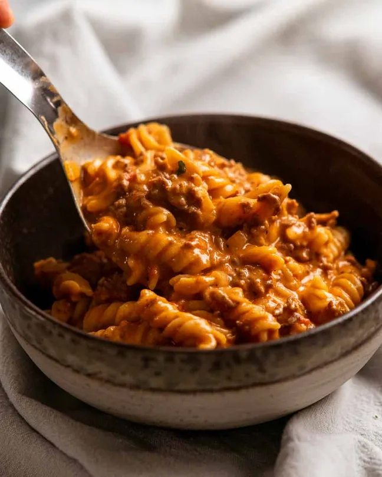

<-- Back
One Pot Beef Tomato Pasta

About this recipe
A tasty, creamy, tomato and beef pasta with italian seasonings,
conveniently made in a single pot!
Ingredients
- 1 1/2 tbsp olive oil
- 2 garlic cloves (finely minced)
- 1 onion (finely chopped)
- 500g beef mince
- 2 tsp Italian herbs
- 400g can crushed tomatoes (or passata)
- 1/2 tsp chilli flakes
- 1 1/2 tsp cooking salt/kosher salt
- 1/2 tsp black pepper
- 4 cups (1L) chicken stock/broth
- 350g fusilli, penne, elbow macaroni (or other short pasta)
- 3/4 cups thickened cream
Serving
- Parmesan cheese (finely grated)
- Parsely
Instructions
-
Sauté - Heat the oil on high heat in a large
heavy-based pot. Cook garlic and onion for 1 1/2 minutes.
-
Cook beef & seasonings - Add beef and cook, breaking it
up as you go, until you can no longer see red meat. Add the Italian
herbs and cook for 30 seconds, then add tomato paste and cook for 1
minute to cook out the raw flavour.
-
All in - Add crushed tomato, chicken stock, salt,
pepper and red pepper flakes, if using. Stir, then add the pasta.
-
Cook 15 min - Bring the liquid to a simmer, then cook
for 15 minutes, stirring every couple of minutes then more frequently
towards the end (ensure pasta doesn't stick to base) until the pasta is
just about cooked.
-
Creamy - Add cream, then simmer for a further 1 to 2
minutes. It will still be quite saucy - this is what you want! Pasta
absorbs liquid quickly, so it will still be nice and oozy when you start
eating.
-
Serve - Remove from the stove. Give it a good stir then
ladle into bowls. Serve with parmesan and parsley.
Home